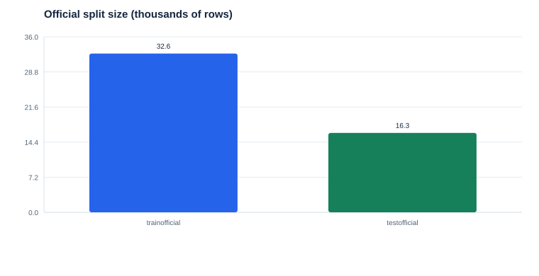
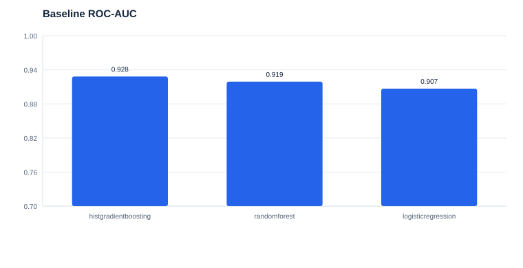
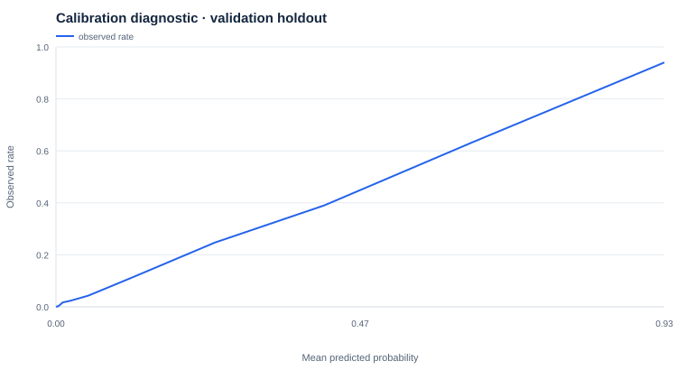
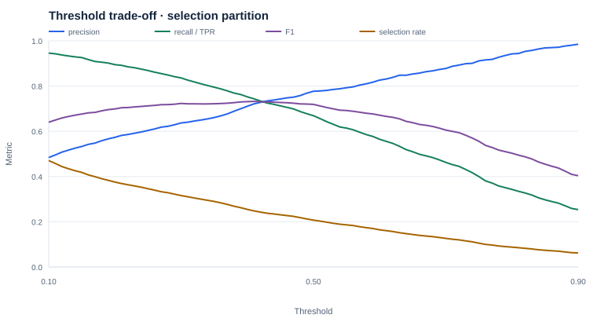
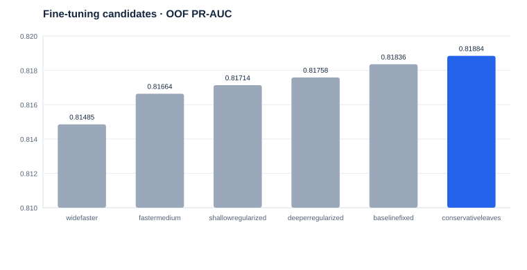
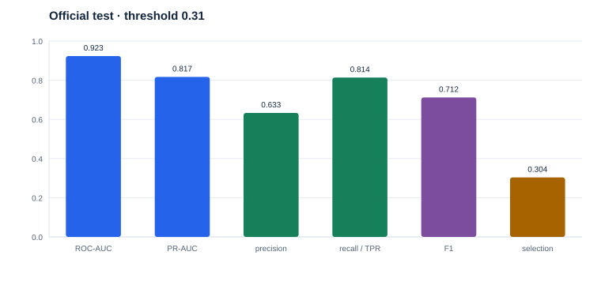
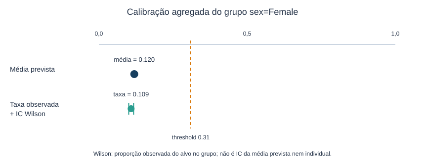
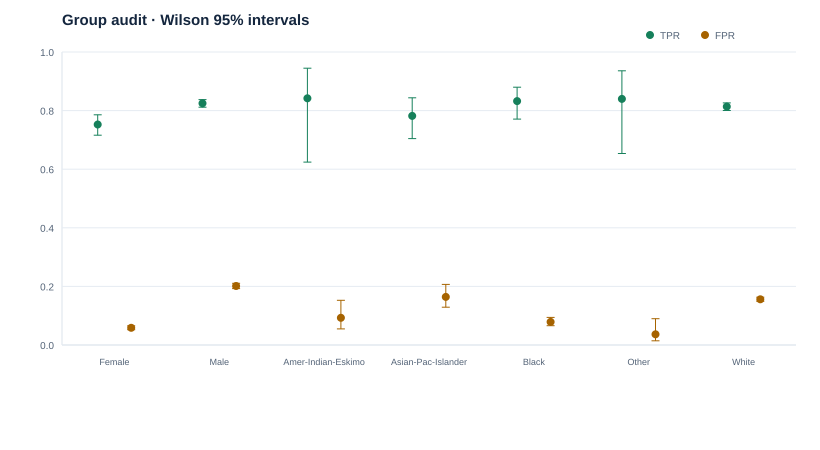

From data contract to final test: a responsible model-risk protocol.
This report summarizes the complete UCI Adult project: data quality and context, baselines, calibration, group audit, threshold selection, fine-tuning and final evaluation. The winner is exploratory and auditable — not approved for production.
UCI Adult dataset · 48,842 rows · official train: 32,561 · reserved test: 16,281 · target: income >50K
A complete investigation, not just a score
The project question is not only “which model has the highest metric?”. It is: which protocol can we explain, reproduce, audit and limit honestly? The work therefore separates development decisions and keeps the official test outside tuning, calibration and selection.
Object
Classify whether annual income in UCI Adult is above 50K, using a historical snapshot derived from the 1994 US census.
UCI Adult source · DOI 10.24432/C5XW20
Risk questions
- Are split and preprocessing isolated?
- Are probabilities useful and calibrated?
- How does threshold change recall, precision and selection?
- Do rates vary by sex, race and intersection?
- Is the result sufficient for production?

data/processed/eda_initial/split_comparison.csv.Scope conclusion: the project delivers an analysis protocol and a portfolio winner. It does not deliver external validation, operational monitoring or authorization for automated decisions about people.
Eight notebooks, one decision narrative
Each notebook answers a question and leaves reusable artifacts. The links open the corresponding notebook in the repository; contracts and CSVs are the materialized source of the numbers shown here.
| Step | Question | Deliverable | Notebook |
|---|---|---|---|
| 01 | Do the data have a contract and provenance? | schema, quality, split and duplicates | open notebook |
| 02 | Which patterns, drift and proxies appear? | EDA, category risk and drift | open notebook |
| 03 | Which baseline deserves investigation? | model comparison and pipeline | open notebook |
| 04 | Were probabilities and groups audited? | diagnostic calibration, Wilson and audit | open notebook |
| 05 | Which model and threshold answer the risk? | Platt, group-aware split and gate | open notebook |
| 05a | Can the estimator be refined before testing? | six HGB candidates and winner | open notebook |
| 06 | What is the result on the frozen test? | one-time evaluation and final contract | open notebook |
| 07 | How does one observation pass through the estimator? | probability, decision and Wilson for comparable cases | open notebook |
Reading rule: Notebooks 06 and 07 preserve frozen decisions: 06 measures the official test once, while 07 applies the estimator to one observation without retraining.
Data context limits the reach of the conclusion
The adopted policy uses the exact predictor signature, excluding the target: source rows are retained and no silent deduplication is performed.
Independence limitation: 28 train rows and 26 test rows participate in these signatures; three keys have discordant targets. The overlap is known and reported as a snapshot diagnostic, not as a pending decision.
View data contracts
The baseline starts with isolation, not optimization
Notebook 03 compares logistic regression, random forest, HistGradientBoosting and a dummy. Preprocessing lives inside the pipeline and is fitted only on the fit block. sex and race are directly excluded, while proxies remain explicitly documented.

baseline_model_comparison.csv.Intermediate decision: HistGradientBoosting had the strongest baseline performance and became the candidate for calibration, threshold selection and fine-tuning.
Probability and fairness are different questions from ranking
Notebook 04 uses precise terminology: baseline holdout “calibration” is diagnostic; in the later protocol, Platt is fitted on a dedicated partition. Groups are compared through selection rate, TPR, FPR, FNR and PPV, with 95% Wilson intervals.

Why Wilson?
The Wilson interval communicates uncertainty around an observed binomial proportion. It prevents a point rate from being read as population certainty, but does not include split variation, multiple comparisons or threshold-selection uncertainty.
Fairness-through-unawareness is insufficient: removing protected attributes does not remove proxies such as relationship, marital_status, education, occupation and native_country.
The threshold makes the accepted risk explicit
After calibration, threshold turns probability into a decision. The grid was refined to 0.01 increments because a 0.05 step hid the transition between recall and precision. Under the approved portfolio exception, the gate requires recall ≥ 0.79 and precision ≥ 0.64.

selection_threshold_metrics.csv; chosen threshold: 0.31.Selection result: 0.31 is the lowest threshold satisfying both floors on the selection partition: precision 0.6403, recall 0.8265, F1 0.7216 and selection 0.3108.
Refine the estimator before touching the test
Notebook 05a evaluates six HistGradientBoosting configurations with group-aware OOF predictions inside fit. conservative_leaves wins by PR-AUC, but the gain over the fixed baseline is small: +0.00049.

hgb_tuning_metrics.csv.Correct reading: this is selection refinement, not a significant performance jump. Tuning finished before final evaluation and the threshold was selected again with the approved parameters.
The exploratory winner on the official test
With estimator, calibrator and threshold frozen, the official test was used once. The model is HistGradientBoosting with max_iter=250, learning_rate=0.05, max_leaf_nodes=15 and min_samples_leaf=30.

Sensitivity: excluding the 26 test rows whose signature also appears in train leaves 16,255 rows and yields ROC-AUC 0.9232, PR-AUC 0.8170, precision 0.6326, recall 0.8135 and F1 0.7118. The proximity supports descriptive stability, not external validation.
Status: the test confirms consistent performance on this snapshot, but does not turn the study into a production model. The final contract keeps production_eligible=false.
One row, one decision, collective uncertainty
Notebook 07 applies the winning model to one official-test observation selected because it is close to the threshold. The probability is individual; the Wilson interval belongs to the observed proportion in the group sex = Female.

Responsible reading: the row crosses the threshold, but its observed label was ≤50K. The example shows that a probabilistic decision can be wrong for an individual; Wilson communicates uncertainty for the comparable group, not a guarantee for the person.
The global score does not describe every experience
On the official test, rates are disaggregated by sex and race at threshold 0.31. The figure shows TPR and FPR with 95% Wilson intervals. Smaller racial categories have reduced support and require caution.

final_test_group_metrics.csv.Example: Female has selection 0.134 and FPR 0.059; Male has selection 0.388 and FPR 0.201. The difference is descriptive: it does not prove causality, discriminatory intent or no bias.
View model card and full audit
What the project allows us to claim
It allows us to claim
- The practical case study shows how one observation receives a probabilistic decision.
- The pipeline and selection are modularized and tested.
- The official test was reserved and used once for final evaluation.
- Data, proxy and support limitations were recorded.
It does not allow us to claim
- Production readiness or use in real decisions.
- Causal fairness or absence of discrimination.
- Generalization to another population or period.
- Perfect test independence given repeated signatures.
Use decision: this artifact is for analysis, risk communication and portfolio presentation. It must not be used for credit, employment, benefits, triage or any real automated decision about people.
Methodological references
Wilson, E. B. (1927). Probable inference, the law of succession, and statistical inference. Journal of the American Statistical Association, 22(158), 209–212. DOI.
Data source: UCI Adult Dataset, DOI 10.24432/C5XW20.
python -m unittest -v tests/test_project_contracts.py 01 → data contract and EDA · 02 → exploratory EDA · 03 → baseline 04 → audit · 05 → threshold · 05a → tuning · 06 → final test production_eligible = false